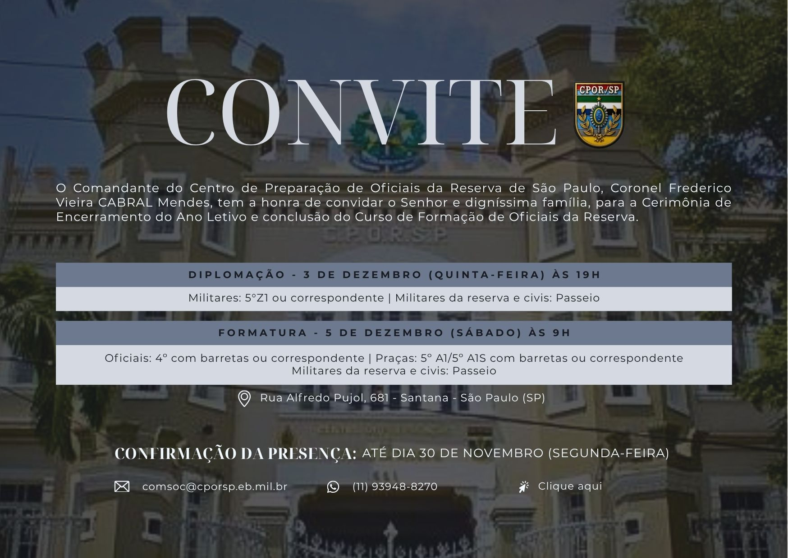

O Comandante do Centro de Preparação de Oficiais da Reserva de São Paulo, Coronel Frederico Vieira CABRAL Mendes,
tem a honra de convidar o Senhor e digníssima família para a Cerimônia de Encerramento do Ano Letivo e conclusão do
Curso de Formação de Oficiais da Reserva. Diplomação: 3 de dezembro, quinta-feira, às 19h. Militares: 5º Z1 ou
correspondente; militares da reserva e civis: passeio. Formatura: 5 de dezembro, sábado, às 9h. Oficiais: 4º com
barretas ou correspondente; praças: 5º A1/5º A1S com barretas ou correspondente; militares da reserva e civis: passeio.
Rua Alfredo Pujol, 681, Santana, São Paulo (SP). Confirmação de presença até 30 de novembro, segunda-feira.